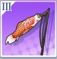
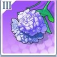

Powered by FantuanpuDevelopers .
Powered by FantuanpuDevelopers .

装 备 数 据 图
| 装备 | 装备名称 | 评分 | 携带等级 | 基础属性 | 随机属性 |
|---|---|---|---|---|---|
| 棒球棒 | 34 | Lv.25 | 攻击：85/ 物理防御：14 | 新属性：Lv.1、4、8、12、16获得 | |
| 棒球帽 | 18 | Lv.25 | 生命值：222/ 异能防御：21 | 新属性：Lv.1、4、8、12、16获得 | |
| 炎之魔导书 | 18 | Lv.25 | 生命值：222 / 物理防御：21 | 新属性：Lv.1、4、8、12、16获得 | |
| 水之魔导书 | 34 | Lv.25 | 攻击：85 / 异能防御：14 | 新属性：Lv.1、4、8、12、16获得 | |
| 红领巾 | 34 | Lv.25 | 攻击：85 / 物理防御：14 | 新属性：Lv.1、4、8、12、16获得 | |
| 五道杠 | 18 | Lv.25 | 生命值：222 / 异能防御：21 | 新属性：Lv.1、4、8获得 | |
| 骚气的绿披风 | 18 | Lv.25 | 生命值：222 / 物理防御：21 | 新属性：Lv.1、4、8、12、16获得 | |
| 醒目的绿帽子 | 34 | Lv.25 | 攻击：85 / 异能防御：14 | 新属性：Lv.1、4、8、12、16获得 | |
| 纸飞机 | 34 | Lv.25 | 攻击：85 / 物理防御：14 | 新属性：Lv.1、4、8、12、16获得 | |
 |
千纸鹤 | 18 | Lv.25 | 生命值：222/ 异能防御：21 | 新属性：Lv.1、4、8、12、16获得 |
| 护士帽 | 18 | Lv.25 | 生命值：222 / 物理防御：21 | 新属性：Lv.1、4、8、12、16获得 | |
| 小纸船 | 34 | Lv.25 | 攻击：85 / 异能防御：14 | 新属性：Lv.1、4、8、12、16获得 | |
| 红板砖 | 34 | Lv.25 | 攻击：85 / 物理防御：14 | 新属性：Lv.1、4、8、12、16获得 | |
| 工地牌 | 18 | Lv.25 | 生命值：222 / 异能防御：21 | 新属性：Lv.1、4、8、12、16获得 | |
| 工具箱 | 18 | Lv.25 | 生命值：222 / 物理防御：21 | 新属性：Lv.1、4、8、12、16获得 | |
| 安全帽 | 34 | Lv.25 | 攻击：85 / 异能防御：14 | 新属性：Lv.1、4、8、12、16获得 | |
| 拐杖 | 46 | Lv.40 | 攻击：115 / 物理防御：19 | 新属性：Lv.1、4、8、12、16、20获得 | |
| 轮椅 | 24 | Lv.40 | 生命值：300 / 异能防御：28 | 新属性：Lv.1、4、8、12、16、20获得 | |
| 萌狼模型 | 24 | Lv.40 | 生命值：300/ 物理防御：28 | 新属性：Lv.1、4、8、12、16、20获得 | |
| 萌虎模型 | 46 | Lv.40 | 攻击：115/ 异能防御：19 | 新属性：Lv.1、4、8、12、16、20获得 | |
| 格林66吊坠 | 46 | Lv.40 | 攻击：115 / 物理防御：19 | 新属性：Lv.1、4、8、12、16、20获得 | |
| 贝比28吊坠 | 24 | Lv.40 | 生命值：300 / 异能防御：28 | 新属性：Lv.1、4、8、12、16、20获得 | |
| 20公分直连线 | 24 | Lv.40 | 生命值：300 / 物理防御：28 | 新属性：Lv.1、4、8、12、16、20获得 | |
| 神经连接装置 | 46 | Lv.40 | 攻击：115/ 异能防御：19 | 新属性：Lv.1、4、8、12、16、20获得 | |
 |
干架狼牙棒 | 46 | Lv.40 | 攻击：115 / 物理防御：19 | 新属性：Lv.1、4、8、12、16、20获得 |
| 恶搞头带 | 24 | Lv.40 | 生命值：300/ 异能防御：28 | 新属性：Lv.1、4、8、12、16、20获得 | |
| 夜露死苦风衣 | 24 | Lv.40 | 生命值：300 / 物理防御：28 | 新属性：Lv.1、4、8、12、16、20获得 | |
 |
潮流飞机头 | 46 | Lv.40 | 攻击：115 / 异能防御：19 | 新属性：Lv.1、4、8、12、16、20获得 |
| 呱太徽章 | 46 | Lv.40 | 攻击：115 / 物理防御：19 | 新属性：Lv.1、4、8、12、16、20获得 | |
| 呱太吊坠 | 24 | Lv.40 | 生命值：300/ 异能防御28 | 新属性：Lv.1、4、8、12、16、20获得 | |
| 呱太指套 | 24 | Lv.40 | 生命值：300/ 物理防御：28 | 新属性：Lv.1、4、8、12、16、20获得 | |
| 呱太公仔 | 46 | Lv.40 | 攻击：115 / 异能防御：19 | 新属性：Lv.1、4、8、12、16、20获得 | |
| 小桐桐同款墨镜 | 46 | Lv.40 | 攻击：115/ 物理防御：19 | 新属性：Lv.1、4、8、12、16、20获得 | |
| 小桐桐同款帽子 | 24 | Lv.40 | 生命值：300 / 异能防御：28 | 新属性：Lv.1、4、8、12、16、20获得 | |
| 小桐桐同款口罩 | 24 | Lv.40 | 生命值：300 / 物理防御：28 | 新属性：Lv.1、4、8、12、16、20获得 | |
| 小桐桐同款假发 | 46 | Lv.40 | 攻击：115 / 异能防御：19 | 新属性：Lv.1、4、8、12、16、20获得 |
| 装备 | 装备名称 | 评分 | 携带等级 | 基础属性 | 随机属性 |
|---|---|---|---|---|---|
 |
零分试卷 | 30 | Lv.25 | 攻击：66/ 物理防御：21 | 新属性：Lv.1、4、8、12、16获得 |
| 满分试卷 | 24 | Lv.25 | 生命值：26/ 异能防御：32 | 新属性：Lv.1、4、8、12、16获得 | |
| 双胞胎头饰.粉 | 24 | Lv.25 | 生命值：266/ 物理防御：32 | 新属性：Lv.1、4、8、12、16获得 | |
 |
双胞胎头饰.黄 | 30 | Lv.25 | 攻击：66 / 异能防御：21 | 新属性：Lv.1、4、8、12、16获得 |
| 黑玫瑰 | 30 | Lv.25 | 攻击：66 / 物理防御：21 | 新属性：Lv.1、4、8、12、16获得 | |
| 红玫瑰 | 24 | Lv.25 | 生命值：266/ 异能防御：32 | 新属性：Lv.1、4、8获得 | |
 |
爱字杯 | 24 | Lv.25 | 生命值：266 / 物理防御：32 | 新属性：Lv.1、4、8、12、16获得 |
| 梦字杯 | 30 | Lv.25 | 攻击：66/ 异能防御：21 | 新属性：Lv.1、4、8、12、16获得 | |
| 灯笼 | 30 | Lv.25 | 攻击：66 / 物理防御：21 | 新属性：Lv.1、4、8、12、16获得 | |
| 风铃 | 24 | Lv.25 | 生命值：266/ 异能防御：32 | 新属性：Lv.1、4、8、12、16获得 | |
|  | 鲤鱼旗 | 24 | Lv.25 | 生命值：266 / 物理防御：32 | 新属性：Lv.1、4、8、12、16获得 |
| 晴天娃哇 | 30 | Lv.25 | 攻击：66/ 异能防御：21 | 新属性：Lv.1、4、8、12、16获得 | |
| 车前草 | 30 | Lv.25 | 攻击：66 / 物理防御：21 | 新属性：Lv.1、4、8、12、16获得 | |
 |
狗尾巴草 | 24 | Lv.25 | 生命值：266/ 异能防御：32 | 新属性：Lv.1、4、8、12、16获得 |
| 蒲公英 | 24 | Lv.25 | 生命值：266 / 物理防御：32 | 新属性：Lv.1、4、8、12、16获得 | |
| 四叶草 | 30 | Lv.25 | 攻击：66 / 异能防御：21 | 新属性：Lv.1、4、8、12、16获得 | |
| 一科生徽章 | 41 | Lv.40 | 攻击：90 / 物理防御：28 | 新属性：Lv.1、4、8、12、16、20获得 | |
| 二科生徽章 | 33 | Lv.40 | 生命值：360/ 异能防御：43 | 新属性：Lv.1、4、8、12、16、20获得 | |
| 兜帽衫 | 33 | Lv.40 | 生命值：360/ 物理防御：43 | 新属性：Lv.1、4、8、12、16、20获得 | |
| 魔法书 | 41 | Lv.40 | 攻击：90/ 异能防御：28 | 新属性：Lv.1、4、8、12、16、20获得 | |
| 防风眼镜 | 41 | Lv.40 | 攻击：90 / 物理防御：28 | 新属性：Lv.1、4、8、12、16、20获得 | |
| 防风帽子 | 33 | Lv.40 | 生命值：360 / 异能防御：43 | 新属性：Lv.1、4、8、12、16、20获得 | |
| 圣者的右臂 | 33 | Lv.40 | 生命值：360 / 物理防御：43 | 新属性：Lv.1、4、8、12、16、20获得 | |
| 贤者的残骸 | 41 | Lv.40 | 攻击：90/ 异能防御：28 | 新属性：Lv.1、4、8、12、16、20获得 | |
| XBW | 41 | Lv.40 | 攻击：90 / 物理防御：28 | 新属性：Lv.1、4、8、12、16、20获得 | |
| GGA | 33 | Lv.40 | 生命值：360/ 异能防御：43 | 新属性：Lv.1、4、8、12、16、20获得 | |
| GGL | 33 | Lv.40 | 生命值：360 / 物理防御：43 | 新属性：Lv.1、4、8、12、16、20获得 | |
| GGS | 41 | Lv.40 | 攻击：90 / 异能防御：28 | 新属性：Lv.1、4、8、12、16、20获得 | |
| 黑白棋 | 41 | Lv.40 | 攻击：90 / 物理防御：28 | 新属性：Lv.1、4、8、12、16、20获得 | |
| 将棋 | 33 | Lv.40 | 生命值：360/ 异能防御43 | 新属性：Lv.1、4、8、12、16、20获得 | |
| 棋盘 | 33 | Lv.40 | 生命值：360/ 物理防御：43 | 新属性：Lv.1、4、8、12、16、20获得 | |
| 国际象棋 | 41 | Lv.40 | 攻击：90 / 异能防御：28 | 新属性：Lv.1、4、8、12、16、20获得 | |
| 元帅斗篷 | 41 | Lv.40 | 攻击：90/ 物理防御：28 | 新属性：Lv.1、4、8、12、16、20获得 | |
| 魔王座驾 | 33 | Lv.40 | 生命值：360 / 异能防御：43 | 新属性：Lv.1、4、8、12、16、20获得 | |
| 魔王战盔 | 33 | Lv.40 | 生命值：360 / 物理防御：43 | 新属性：Lv.1、4、8、12、16、20获得 | |
| 魔王大剑 | 41 | Lv.40 | 攻击：90 / 异能防御：28 | 新属性：Lv.1、4、8、12、16、20获得 | |
| 企鹅公仔 | 30 | Lv.25 | 攻击：66/ 物理防御：21 | 新属性：Lv.1、4、8、12、16获得 | |
| 心悦魔方 | 24 | Lv.25 | 生命值：266 / 异能防御：32 | 新属性：Lv.1、4、8、12、16获得 | |
| 宝石耳坠 | 24 | Lv.25 | 生命值：266/ 异能防御：32 | 新属性：Lv.1、4、8、12、16获得 | |
| 麦穗福袋 | 24 | Lv25 | 生命值：266/ 物理防御：32 | 新属性：Lv.1、4、8、12、16获得 | |
| 迷你电视 | 24 | Lv.25 | 生命值：266 / 物理防御：32 | 新属性：Lv.1、4、8、12、16获得 | |
| 布偶炸弹 | 34 | Lv.25 | 攻击：85 / 物理防御：14 | 新属性：Lv.1、4、8、12、16获得 | |
 |
遥控炸弹 | 18 | Lv.25 | 生命值：222/ 异能防御21 | 新属性：Lv.1、4、8、12、16获得 |
| 炸弹引线 | 18 | Lv.25 | 生命值：222/ 物理防御：21 | 新属性：Lv.1、4、8、12、16获得 | |
| 喷射炸弹 | 34 | Lv.25 | 攻击：85 / 异能防御：14 | 新属性：Lv.1、4、8、12、16获得 | |
| 樱花 | 30 | Lv.25 | 攻击：66/ 物理防御：21 | 新属性：Lv.1、4、8、12、16获得 | |
| 铃兰 | 24 | Lv.25 | 生命值：266 / 异能防御：32 | 新属性：Lv.1、4、8、12、16获得 | |
|  | 紫阳花 | 24 | Lv.25 | 生命值：266 / 物理防御：32 | 新属性：Lv.1、4、8、12、16获得 |
| 枫叶 | 30 | Lv.25 | 攻击：6 / 异能防御：21 | 新属性：Lv.1、4、8、12、16获得 |
| 装备 | 装备名称 | 评分 | 携带等级 | 基础属性 | 随机属性 |
|---|---|---|---|---|---|
| 白色猫又又 | 28 | Lv.25 | 攻击：53/ 物理防御：28 | 新属性：Lv.1、4、8、12、16获得 | |
| 黑色猫又又 | 30 | Lv.25 | 生命值：311/ 异能防御：42 | 新属性：Lv.1、4、8、12、16获得 | |
| 啤酒桶 | 30 | Lv.25 | 生命值：311 / 物理防御：42 | 新属性：Lv.1、4、8、12、16获得 | |
| 啤酒杯 | 28 | Lv.25 | 攻击：53 / 异能防御：28 | 新属性：Lv.1、4、8、12、16获得 | |
| 摩托车手套 | 30 | Lv.25 | 生命值：311/ 异能防御：42 | 新属性：Lv.1、4、8、12、16获得 | |
| 摩托车头盔 | 30 | Lv.25 | 生命值：311/ 异能防御：42 | 新属性：Lv.1、4、8、12、16获得 | |
| 卡通手帕 | 30 | Lv.25 | 生命值：311 / 物理防御：42 | 新属性：Lv.1、4、8、12、16获得 | |
| 条纹手帕 | 28 | Lv.25 | 攻击：53/ 异能防御：28 | 新属性：Lv.1、4、8、12、16获得 | |
| 绿色锦囊 | 28 | Lv.25 | 攻击：53/ 物理防御：28 | 新属性：Lv.1、4、8、12、16获得 | |
| 红色锦囊 | 30 | Lv.25 | 生命值：311/ 异能防御：42 | 新属性：Lv.1、4、8、12、16获得 | |
| 橙色锦囊 | 30 | Lv.25 | 生命值：311 / 物理防御：42 | 新属性：Lv.1、4、8、12、16获得 | |
| 蓝色锦囊 | 28 | Lv.25 | 攻击：53 / 异能防御：28 | 新属性：Lv.1、4、8、12、16获得 | |
| AIM扩散力场理论书 | 28 | Lv.25 | 攻击：53 / 物理防御：28 | 新属性：Lv.1、4、8、12、16获得 | |
| 教材完全解读/td> | 30 | Lv.25 | 生命值：311 / 异能防御：42 | 新属性：Lv.1、4、8、12、16获得 | |
| 超难的数学习题集 | 30 | Lv.25 | 生命值：311 / 物理防御：42 | 新属性：Lv.1、4、8、12、16获得 | |
| 畅销的高考辅导书 | 28 | Lv.25 | 攻击：53 / 异能防御：28 | 新属性：Lv.1、4、8、12、16获得 | |
| 擀面杖 | 28 | Lv.40 | 攻击：53 / 物理防御：28 | 新属性：Lv.1、4、8、12、16获得 | |
| 面包师围裙 | 30 | Lv.25 | 生命值：311 / 异能防御：42 | 新属性：Lv.1、4、8、12、16获得 | |
| 面包师头巾 | 30 | Lv.25 | 生命值：311/ 物理防御：42 | 新属性：Lv.1、4、8、12、16获得 | |
| 面包模具 | 28 | Lv.25 | 攻击：53/ 异能防御：28 | 新属性：Lv.1、4、8、12、16获得 | |
 |
章鱼玩偶 | 38 | Lv.40 | 攻击：72 / 物理防御：38 | 新属性：Lv.1、4、8、12、16、20获得 |
| 章鱼挂饰 | 40 | Lv.40 | 生命值：420 / 异能防御：57 | 新属性：Lv.1、4、8、12、16、20获得 | |
| 灵魂之花 | 40 | Lv.40 | 生命值：420 / 物理防御：57 | 新属性：Lv.1、4、8、12、16、20获得 | |
| 毕娜之心 | 38 | Lv.40 | 攻击：72/ 异能防御：38 | 新属性：Lv.1、4、8、12、16、20获得 | |
| 佩尔苏娜面具 | 38 | Lv.40 | 攻击：72 / 物理防御：38 | 新属性：Lv.1、4、8、12、16、20获得 | |
| 万条巧手缎带 | 40 | Lv.40 | 生命值：420/ 异能防御：57 | 新属性：Lv.1、4、8、12、16、20获得 | |
| 天诛少女手环 | 40 | Lv.40 | 生命值：420 / 物理防御：57 | 新属性：Lv.1、4、8、12、16、20获得 | |
| 天诛少女影碟 | 38 | Lv.40 | 攻击：72 / 异能防御：38 | 新属性：Lv.1、4、8、12、16、20获得 | |
| 玄不救非 | 38 | Lv.40 | 攻击：72/ 物理防御：38 | 新属性：Lv.1、4、8、12、16、20获得 | |
| 咲久呐喊 | 40 | Lv.40 | 生命值：420/ 异能防御：57 | 新属性：Lv.1、4、8、12、16、20获得 | |
| 维特鲁威 | 40 | Lv.40 | 生命值：420/ 物理防御：57 | 新属性：Lv.1、4、8、12、16、20获得 | |
 |
氪不改命 | 38 | Lv.40 | 攻击：72 / 异能防御：38 | 新属性：Lv.1、4、8、12、16、20获得 |
| 天文望远镜 | 38 | Lv.40 | 攻击：72/ 物理防御：38 | 新属性：Lv.1、4、8、12、16、20获得 | |
| 星空图 | 40 | Lv.40 | 生命值：420 / 异能防御：57 | 新属性：Lv.1、4、8、12、16、20获得 | |
| 宇航员模型 | 40 | Lv.40 | 生命值：420 / 物理防御：57 | 新属性：Lv.1、4、8、12、16、20获得 | |
| UFO模型 | 38 | Lv.40 | 攻击：72 / 异能防御：38 | 新属性：Lv.1、4、8、12、16、20获得 | |
| 西子酱的武器·Ⅰ | 38 | Lv.40 | 攻击：72 / 物理防御：38 | 新属性：Lv.1、4、8、12、16、20获得 | |
| 西子酱的武器·Ⅱ | 40 | Lv.40 | 生命值：420/ 异能防御：57 | 新属性：Lv.1、4、8、12、16、20获得 | |
| 西子酱的武器·|||| | 40 | Lv.40 | 生命值：420 / 物理防御：57 | 新属性：Lv.1、4、8、12、16、20获得 | |
| 西子酱的武器·Ⅳ | 40 | Lv.40 | 攻击：72 / 异能防御：38 | 新属性：Lv.1、4、8、12、16、20获得 |